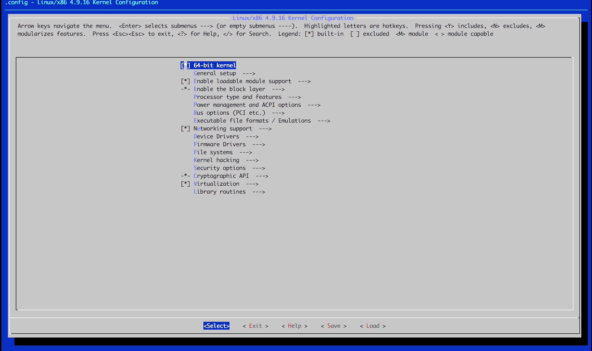
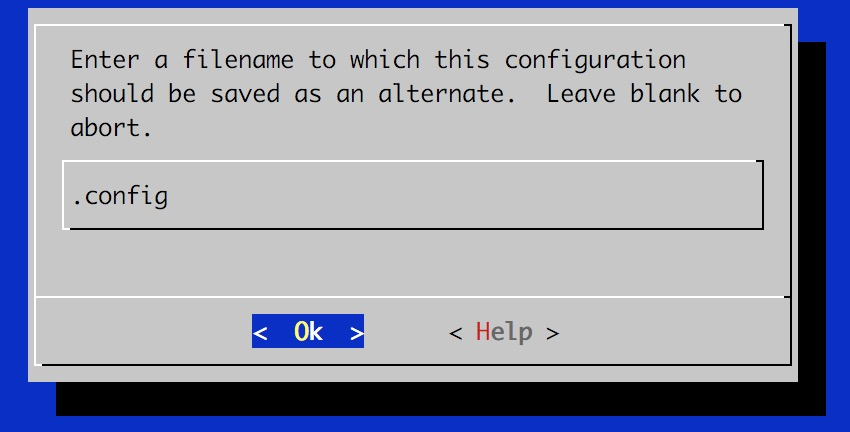
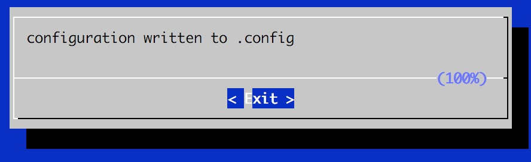
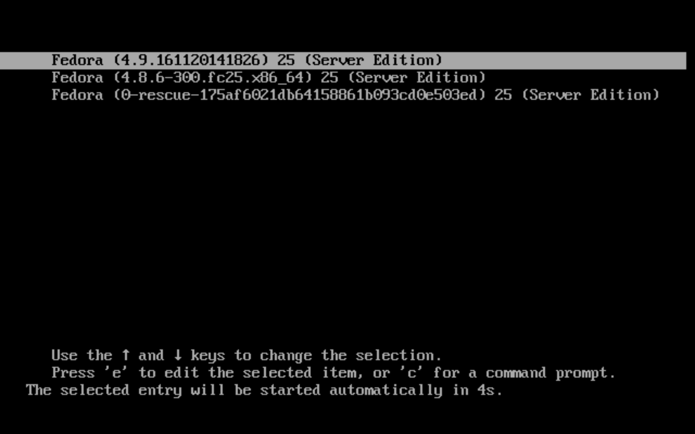
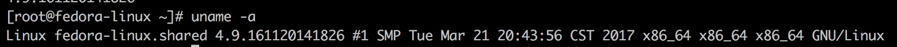

<!DOCTYPE html>
<html lang="en">

<!-- Head tag -->
<head>
    <meta charset="utf-8">
    <meta http-equiv="X-UA-Compatible" content="IE=edge">
    <meta name="google-site-verification" content="xBT4GhYoi5qRD5tr338pgPM5OWHHIDR6mNg1a3euekI" />
    <meta name="viewport" content="width=device-width, initial-scale=1">
    <meta name="description" content="Nathaniel的博客">
    <meta name="keyword"  content="博客 极客 程序员 技术">
    <link rel="shortcut icon" href="/img/favicon.ico">

    <title>
        
          Linux内核编译 - Nathaniel的博客
        
    </title>

    <link rel="canonical" href="http://blog.nathaniel-lin.me/2017/03/24/compile-linux-kernel/">

    <!-- Bootstrap Core CSS -->
    <link rel="stylesheet" href="/css/bootstrap.min.css">

    <!-- Custom CSS -->
    <link rel="stylesheet" href="/css/hux-blog.min.css">

    <!-- Pygments Github CSS -->
    <link rel="stylesheet" href="/css/syntax.css">

    <!-- Custom Fonts -->
    <!-- <link href="http://maxcdn.bootstrapcdn.com/font-awesome/4.3.0/css/font-awesome.min.css" rel="stylesheet" type="text/css"> -->
    <!-- Hux change font-awesome CDN to qiniu -->
    <link href="//cdnjs.cloudflare.com/ajax/libs/font-awesome/4.6.3/css/font-awesome.min.css" rel="stylesheet" type="text/css">


    <!-- Hux Delete, sad but pending in China
    <link href='https://fonts.googleapis.com/css?family=Lora:400,700,400italic,700italic' rel='stylesheet' type='text/css'>
    <link href='https://fonts.googleapis.com/css?family=Open+Sans:300italic,400italic,600italic,700italic,800italic,400,300,600,700,800' rel='stylesheet' type='text/
    css'>
    -->


    <!-- HTML5 Shim and Respond.js IE8 support of HTML5 elements and media queries -->
    <!-- WARNING: Respond.js doesn't work if you view the page via file:// -->
    <!--[if lt IE 9]>
        <script src="https://oss.maxcdn.com/libs/html5shiv/3.7.0/html5shiv.js"></script>
        <script src="https://oss.maxcdn.com/libs/respond.js/1.4.2/respond.min.js"></script>
    <![endif]-->

    <!-- ga & ba script hoook -->
    <script></script>
</head>


<!-- hack iOS CSS :active style -->
<body ontouchstart="">

    <!-- Navigation -->
<nav class="navbar navbar-default navbar-custom navbar-fixed-top">
    <div class="container-fluid">
        <!-- Brand and toggle get grouped for better mobile display -->
        <div class="navbar-header page-scroll">
            <button type="button" class="navbar-toggle">
                <span class="sr-only">Toggle navigation</span>
                <span class="icon-bar"></span>
                <span class="icon-bar"></span>
                <span class="icon-bar"></span>
            </button>
            <a class="navbar-brand" href="/">Nathaniel&#39;s Blog</a>
        </div>

        <!-- Collect the nav links, forms, and other content for toggling -->
        <!-- Known Issue, found by Hux:
            <nav>'s height woule be hold on by its content.
            so, when navbar scale out, the <nav> will cover tags.
            also mask any touch event of tags, unfortunately.
        -->
        <div id="huxblog_navbar">
            <div class="navbar-collapse">
                <ul class="nav navbar-nav navbar-right">
                    <li>
                        <a href="/">Home</a>
                    </li>

                    

                        
                    

                        
                        <li>
                            <a href="/archives/">Archives</a>
                        </li>
                        
                    

                        
                        <li>
                            <a href="/about/">About</a>
                        </li>
                        
                    

                        
                        <li>
                            <a href="/tags/">Tags</a>
                        </li>
                        
                    
                    
                </ul>
            </div>
        </div>
        <!-- /.navbar-collapse -->
    </div>
    <!-- /.container -->
</nav>
<script>
    // Drop Bootstarp low-performance Navbar
    // Use customize navbar with high-quality material design animation
    // in high-perf jank-free CSS3 implementation
    var $body   = document.body;
    var $toggle = document.querySelector('.navbar-toggle');
    var $navbar = document.querySelector('#huxblog_navbar');
    var $collapse = document.querySelector('.navbar-collapse');

    $toggle.addEventListener('click', handleMagic)
    function handleMagic(e){
        if ($navbar.className.indexOf('in') > 0) {
        // CLOSE
            $navbar.className = " ";
            // wait until animation end.
            setTimeout(function(){
                // prevent frequently toggle
                if($navbar.className.indexOf('in') < 0) {
                    $collapse.style.height = "0px"
                }
            },400)
        }else{
        // OPEN
            $collapse.style.height = "auto"
            $navbar.className += " in";
        }
    }
</script>


    <!-- Main Content -->
    
<!-- Image to hack wechat -->
<!--  -->
<!--  -->

<!-- Post Header -->
<style type="text/css">
    header.intro-header{
        background-image: url('post-bg-compile-linux-kernel.png')
    }
</style>
<header class="intro-header" >
    <div class="container">
        <div class="row">
            <div class="col-lg-8 col-lg-offset-2 col-md-10 col-md-offset-1">
                <div class="post-heading">
                    <div class="tags">
                        
                          <a class="tag" href="/tags/#Linux" title="Linux">Linux</a>
                        
                          <a class="tag" href="/tags/#操作系统" title="操作系统">操作系统</a>
                        
                          <a class="tag" href="/tags/#Fedora" title="Fedora">Fedora</a>
                        

                    </div>
                    <h1>Linux内核编译</h1>
                    <h2 class="subheading">全命令行操作的挑战</h2>
                    <span class="meta">
                        Posted by Nathaniel on
                        2017-03-24
                    </span>
                </div>
            </div>
        </div>
    </div>
</header>

<!-- Post Content -->
<article>
    <div class="container">
        <div class="row">

    <!-- Post Container -->
            <div class="
                col-lg-8 col-lg-offset-2
                col-md-10 col-md-offset-1
                post-container">

                <h2 id="Linux内核编译"><a href="#Linux内核编译" class="headerlink" title="Linux内核编译"></a>Linux内核编译</h2><h3 id="缘由"><a href="#缘由" class="headerlink" title="缘由"></a>缘由</h3><p>最近在学操作系统，(名为操作系统实为Linux内核)。都说程序员的学习、提高在于实践，实践才能出真知。所以，不来实际操作一下，感受一下Linux内核的魅力，怎么好意思说自己了解Linux操作系统。</p>
<h3 id="准备工作"><a href="#准备工作" class="headerlink" title="准备工作"></a>准备工作</h3><p>当然我们不能凭空地就开始编译Linux内核，巧妇难为无米之炊，以下是进行Linux内核编译前需要的准备工作：</p>
<h5 id="搭建一个Linux运行环境"><a href="#搭建一个Linux运行环境" class="headerlink" title="搭建一个Linux运行环境"></a>搭建一个Linux运行环境</h5><p>当然我们也可以从基于BSD的macOS、甚至是Windows下编译Linux内核，但是那样的话会有数不清的困难。相比较处理这些困难，我认为我们应该把精力投入主要的目标上去，毕竟一个人的精力是有限的。因此推荐你使用一个虚拟机来搭建一个Linux运行环境。</p>
<p>由于对RedHat公司的特殊好感，我使用了<a href="https://getfedora.org/en/server/download/" target="_blank" rel="external">Fedora 25 Server Edition</a>，当然你可以使用任何其他的Linux发行版，由于发行版的不同可能会在部分命令上有细微的差别，但是总体的思路都是一样的。</p>
<p>虚拟机软件的话，推荐你使用Oracle公司开发的小巧而免费的<a href="https://www.virtualbox.org/wiki/Downloads" target="_blank" rel="external">VirtualBox</a></p>
<h5 id="了解一些基础的Linux命令"><a href="#了解一些基础的Linux命令" class="headerlink" title="了解一些基础的Linux命令"></a>了解一些基础的Linux命令</h5><p>虽然说了解这些命令不是必须的，但是没有它们你在Linux下，尤其是没有GUI的Server Edition的Linux下，你将会寸步难行。因此这里有一些常用的bash命令以供参考:</p>
<table>
<thead>
<tr>
<th>命令</th>
<th>功能</th>
</tr>
</thead>
<tbody>
<tr>
<td>cd</td>
<td>打开某个目录 cd .. 可以返回到上级目录</td>
</tr>
<tr>
<td>ls</td>
<td>显示当前目录下所有的非隐藏的文件</td>
</tr>
<tr>
<td>./executable</td>
<td>执行某个可执行的二进制文件</td>
</tr>
<tr>
<td>cp</td>
<td>复制 cp /path_a/a /path_b/ 表示把path_a下的a复制到path_b下去</td>
</tr>
<tr>
<td>mv</td>
<td>移动 同上，操作变为移动</td>
</tr>
<tr>
<td>man</td>
<td>查看帮助 man xxx 可以查看 xxx的使用方法，不过都是英文的，需要一些英文功底</td>
</tr>
<tr>
<td>tab键</td>
<td>自动补全用，可以在输入长文件名时自动补全该文件名(无名称相似的文件的情况下)</td>
</tr>
</tbody>
</table>
<h5 id="差不多一下午的空闲时间"><a href="#差不多一下午的空闲时间" class="headerlink" title="差不多一下午的空闲时间"></a>差不多一下午的空闲时间</h5><p>Linux内核是一个巨大的项目，编译它需要大量的时间，中途而停止不是一个好习惯。当然你可以在编译的过程中干一些其他有意义的事情（比如学习线性代数？😄）</p>
<h5 id="一台用于运行以上环境的计算机"><a href="#一台用于运行以上环境的计算机" class="headerlink" title="一台用于运行以上环境的计算机"></a>一台用于运行以上环境的计算机</h5><p>什么？你说你没有计算机。那么要想学好计算机科学，首先你需要找到一台可供你支配的计算机。</p>
<h3 id="开始工作"><a href="#开始工作" class="headerlink" title="开始工作"></a>开始工作</h3><p>闲话少说，来开始工作吧，这里假设你已经有了一个可以允许的Linux系统了。接下来就是实际的工作步骤了。</p>
<h5 id="获取Linux系统源码"><a href="#获取Linux系统源码" class="headerlink" title="获取Linux系统源码"></a>获取Linux系统源码</h5><p>习惯上，我们喜欢把源代码文件放置到<code>/usr/src/</code>目录下，因此便有了下面的命令</p>
<figure class="highlight bash"><table><tr><td class="code"><pre><div class="line"><span class="built_in">cd</span> /usr/src/</div></pre></td></tr></table></figure>
<figure class="highlight bash"><table><tr><td class="code"><pre><div class="line">wget https://www.kernel.org/pub/linux/kernel/v4.x/linux-4.9.16.tar.xz</div></pre></td></tr></table></figure>
<p>在这里，我选择了我编译时最新的内核源码版本<code>4.9.16</code>，你当然可以选择任何你想要编译的版本。</p>
<h5 id="解压源码"><a href="#解压源码" class="headerlink" title="解压源码"></a>解压源码</h5><p>获取到的源代码是一个压缩包，压缩包的格式是<code>tar.xz</code>，可能有些人会苦恼了，以前见过的压缩包都是<code>.rar``.zip</code>结尾的，从来没有见过<code>tar.xz</code>结尾的压缩包，这该怎么解压呢？是不是得去下载一个类似<code>Winrar</code>的解压软件？别急，Linux自带了解压<code>tar.xz</code>的软件只需使用下面这行命令即可</p>
<figure class="highlight bash"><table><tr><td class="code"><pre><div class="line">tar -xvJf linux-4.9.16.tar.xz</div></pre></td></tr></table></figure>
<p>紧接着，你就会看到一串文字闪过，当它不再动的时候，就说明解压完成了</p>
<p>解压完了，自然好奇心浓重的我们应该进去一探究竟，输入下面这条命令进入解压后的文件夹</p>
<figure class="highlight bash"><table><tr><td class="code"><pre><div class="line"><span class="built_in">cd</span> linux-4.9.16.tar.xz</div></pre></td></tr></table></figure>
<p>文件夹里面都什么呢？显然都是Linux内核的源代码，（好吧源代码压缩包解压后不是源代码还能是什么。。）<code>.c</code> <code>.h</code>后缀的文件都是源代码文件。</p>
<h5 id="开始编译"><a href="#开始编译" class="headerlink" title="开始编译"></a>开始编译</h5><p>看到这里大家可能有点兴奋了，终于要开始编译了！别着急，磨刀不误砍柴功，我们先来简要了解一下Linux下程序编译的过程:</p>
<p>Linux源码编译至程序需要下面三个步骤</p>
<p>(1)Configure</p>
<p>Configure指令通常用于为在你所使的特定操作系统下做编译的准备工作，通常用于检查该程序编译所需的库是否都已经在系统中存在，以及确定编译器所在的位置等。同时使用程序作者提供的<code>Makefile.in</code>生成下一步需要使用的<code>Makefile</code></p>
<p>(2)Make</p>
<p>这一步进行实际的编译工作，根据Makefile中的内容对众多源代码文件进行对应的编译、链接操作。这步操作生成了实际的二进制可执行文件</p>
<p>(3)Make Install</p>
<p>生成二进制文件后，显然需要将其放置到特定的目录下。Make Install命令便会将前一步所生成的二进制文件及其文档等移动至目标目录下。</p>
<h5 id="真正的开始编译"><a href="#真正的开始编译" class="headerlink" title="真正的开始编译"></a>真正的开始编译</h5><p>显然编译Linux内核也符合上述三个步骤，Linux内核项目由于体积巨大，Configure过程由手工实现将会非常耗时，因此Linux内核提供了多种Configure方式。我采用了Make menuconfig的模式，通过一个古典的GUI 菜单的方式，实现了Configure的过程。命令如下：</p>
<figure class="highlight bash"><table><tr><td class="code"><pre><div class="line">make menuconfig</div></pre></td></tr></table></figure>
<p>当然，一个友情提示，这一步可能会提醒你缺少<code>libncurses</code> <code>libncurses-devel</code>这样的库，你只需要根据你的Linux发行版进行对应的安装操作就可以了。Fedora下的话只需要输入<code>yum install libcurses</code>即可</p>
<p>成功执行<code>make menuconfig</code>指令后会出现一个下面这样的菜单</p>
<p></p>
<p>接下来使用方向键把光标移动到<code>Save</code>按钮上，按回车键，会出现下面的一个窗口</p>
<p></p>
<p>再次按回车键，会看到一个确认消息</p>
<p></p>
<p>最后使用方向键把光标移动到<code>Exit</code>上退出这个config生成程序</p>
<p>那么我们刚才究竟做了什么呢？我们实际上完成了上面所说的Linux下编译程序的第一步——Configure过程</p>
<p>生成的<code>.config</code>文件，里面就包含了编译Linux内核所有需要配置的选项</p>
<p>也许你要问了？要这么一个<code>.config</code>文件有什么用呢？</p>
<p>那么我要反问你，你对你常用的软件进行过<strong>设置</strong>吗？</p>
<p>这里的<code>.config</code>文件，实际上和你<strong>设置、个性化</strong>你所使用的软件是一个道理，就是控制你的程序的行为，Linux内核项目庞大，需要这样的<strong>设置、个性化</strong>的地方非常多，由于临时修改代码显得不显示而且不优雅，一个<code>.config</code>文件，就完美的解决了这个问题。</p>
<h5 id="真正的真正的开始编译"><a href="#真正的真正的开始编译" class="headerlink" title="真正的真正的开始编译"></a>真正的真正的开始编译</h5><p>好吧，如果特别狭义地定义编译的话，实际上现在我们才开始编译Linux内核代码，输入下面的命令:</p>
<figure class="highlight bash"><table><tr><td class="code"><pre><div class="line">make</div></pre></td></tr></table></figure>
<p>2~3小时过去了。。。接着输入下面的命令</p>
<figure class="highlight bash"><table><tr><td class="code"><pre><div class="line">make modules</div></pre></td></tr></table></figure>
<p>1~2小时过去了。。。终于编译完成啦！</p>
<h3 id="安装Linux内核"><a href="#安装Linux内核" class="headerlink" title="安装Linux内核"></a>安装Linux内核</h3><p>什么？你只说编译内核，可没有说要安装啊？恩，的确是这样，不过，我们怎么检测我们编译是否成功了呢？那就只有安装一下测试看看了。（如果你的Linux下有重要的项目建议就不要安装了）安装起来吧，其实也并没有多难，输入以下指令:</p>
<figure class="highlight bash"><table><tr><td class="code"><pre><div class="line">make modules_install</div></pre></td></tr></table></figure>
<figure class="highlight bash"><table><tr><td class="code"><pre><div class="line">make install</div></pre></td></tr></table></figure>
<p>等了很久之后你就会看到安装成功的消息（当然也可能是安装失败的消息。。。）</p>
<h3 id="大功告成"><a href="#大功告成" class="headerlink" title="大功告成"></a>大功告成</h3><p>安装完成之后，怎么看新内核能不能用呢？重启一下便知道。哎，没有开始菜单也没有重启按钮怎么办？Linux下都是靠各种指令度日的，输入以下指令:</p>
<figure class="highlight bash"><table><tr><td class="code"><pre><div class="line">reboot</div></pre></td></tr></table></figure>
<p>然后你就会看到下面的激动的画面了</p>
<p></p>
<p>Hurrah!安装成功了，用新内核启动吧。</p>
<p>启动之后又纳闷了，怎么查看版本号呢？</p>
<p>输入下面的指令</p>
<figure class="highlight bash"><table><tr><td class="code"><pre><div class="line">uname -a</div></pre></td></tr></table></figure>
<p></p>
<p>恩，果然是最新版的内核</p>
<h3 id="题外话"><a href="#题外话" class="headerlink" title="题外话"></a>题外话</h3><p>编译过程中，得保证内存和磁盘空间的充足的供应，就我个人来说，就曾经因内存不足(memory exhausted)和磁盘空间已满(disk full)两个问题而导致了两次的编译失败，重新编译甚为痛苦。因此一定要给你的Linux虚拟机分配足够的硬件资源。</p>
<p>另外，有可能Linux系统没有充分利用你提供给它的硬件资源，这时候需要你手工去分配给它，比如：</p>
<p>先输入</p>
<figure class="highlight bash"><table><tr><td class="code"><pre><div class="line">df -h</div></pre></td></tr></table></figure>
<p>可以查看你磁盘空间的使用情况</p>
<p>输入</p>
<figure class="highlight bash"><table><tr><td class="code"><pre><div class="line">pvscan</div></pre></td></tr></table></figure>
<p>可以扫描你未分配的磁盘空间情况</p>
<p>那么怎么把它分配给root分区呢？<a href="https://superuser.com/questions/1072547/no-more-space-in-root-filesystem-how-could-i-increase-the-size" target="_blank" rel="external">Staroverflow上的一位神人</a>给予了我们答案：</p>
<figure class="highlight bash"><table><tr><td class="code"><pre><div class="line">sudo lvextend --size +10G --resizefs /dev/fedora/root</div></pre></td></tr></table></figure>
<p>每次输入这条指令，你的root分区大小就会增大10GB，注意你的不同发行版间命令可能会有区别，此命令仅仅适用于Fedora，另外在你执行<code>pvscan</code>之后显示<code>[M GiB / N GiB free]</code>，在N&gt;0的情况下才能使用。</p>


                <hr>

                

                <ul class="pager">
                    
                        <li class="previous">
                            <a href="/2017/07/12/redhat-interview-review/" data-toggle="tooltip" data-placement="top" title="反思与总结">&larr; Previous Post<br>
                            <span>反思与总结</span></a>
                        </li>
                    
                    
                        <li class="next">
                            <a href="/2017/01/27/bwapi-usage/" data-toggle="tooltip" data-placement="top" title="星际争霸AI编写环境搭建教程">Next Post &rarr;<br>
                            <span>星际争霸AI编写环境搭建教程</span></a>
                        </li>
                    
                </ul>

                

                

                
                <!-- 来必力 评论框 start -->
                <div class="comment">
                    <div id="lv-container" data-id="city" data-uid="MTAyMC8yOTc4OC82MzU0"></div>
                </div>
                <!-- 来必力 评论框 end -->
                

            </div>  
 
      <!-- Sidebar Container -->
        

    <!-- Sidebar Container -->

            <div class="
                col-lg-8 col-lg-offset-2
                col-md-10 col-md-offset-1
                sidebar-container">

                <!-- Featured Tags -->
                
                <section>
                    <!-- no hr -->
                    <h5><a href="/tags/">FEATURED TAGS</a></h5>
                    <div class="tags">
                        
                            
                            <a href="/tags/#数据库" title="数据库" rel="3">数据库</a>
                            
                        
                            
                        
                            
                        
                            
                        
                            
                        
                            
                        
                            
                        
                            
                            <a href="/tags/#随笔" title="随笔" rel="5">随笔</a>
                            
                        
                            
                        
                            
                        
                            
                            <a href="/tags/#工具使用" title="工具使用" rel="3">工具使用</a>
                            
                        
                            
                        
                            
                        
                            
                        
                            
                        
                            
                        
                            
                        
                            
                        
                            
                        
                            
                        
                            
                            <a href="/tags/#Linux" title="Linux" rel="2">Linux</a>
                            
                        
                            
                        
                            
                        
                            
                        
                            
                        
                            
                        
                            
                        
                            
                        
                            
                        
                    </div>
                </section>
                

                <!-- Friends Blog -->
                
                <hr>
                <h5>FRIENDS</h5>
                <ul class="list-inline">

                    
                        <li><a href="http://satjd.net" target="_blank">Satjd&#39;s Blog</a></li>
                    
                        <li><a href="https://liu1084455812.github.io" target="_blank">Liu&#39;s Blog</a></li>
                    
                        <li><a href="http://huangxuan.me" target="_blank">Hux Blog</a></li>
                    
                        <li><a href="https://chybeta.github.io" target="_blank">Chybeta&#39;s Blog</a></li>
                    
                </ul>
                
            </div>

        </div>
    </div>
</article>


<script type="text/javascript">
    (function(d, s) {
       var j, e = d.getElementsByTagName(s)[0];

       if (typeof LivereTower === 'function') { return; }

       j = d.createElement(s);
       j.src = 'https://cdn-city.livere.com/js/embed.dist.js';
       j.async = true;

       e.parentNode.insertBefore(j, e);
    })(document, 'script');
</script>


<!-- async load function -->
<script>
    function async(u, c) {
      var d = document, t = 'script',
          o = d.createElement(t),
          s = d.getElementsByTagName(t)[0];
      o.src = u;
      if (c) { o.addEventListener('load', function (e) { c(null, e); }, false); }
      s.parentNode.insertBefore(o, s);
    }
</script>
<!-- anchor-js, Doc:https://bryanbraun.github.io/anchorjs/ -->
<script>
    async("//cdnjs.cloudflare.com/ajax/libs/anchor-js/1.1.1/anchor.min.js",function(){
        anchors.options = {
          visible: 'always',
          placement: 'right',
          icon: '#'
        };
        anchors.add().remove('.intro-header h1').remove('.subheading').remove('.sidebar-container h5');
    })
</script>
<style>
    /* place left on bigger screen */
    @media all and (min-width: 800px) {
        .anchorjs-link{
            position: absolute;
            left: -0.75em;
            font-size: 1.1em;
            margin-top : -0.1em;
        }
    }
</style>


    <!-- Footer -->
    <!-- Footer -->
<footer>
    <div class="container">
        <div class="row">
            <div class="col-lg-8 col-lg-offset-2 col-md-10 col-md-offset-1">
                <ul class="list-inline text-center">
                
                
                    <li>
                        <a target="_blank" href="https://twitter.com/llldar">
                            <span class="fa-stack fa-lg">
                                <i class="fa fa-circle fa-stack-2x"></i>
                                <i class="fa fa-twitter fa-stack-1x fa-inverse"></i>
                            </span>
                        </a>
                    </li>
                
                
                    <li>
                        <a target="_blank" href="https://www.zhihu.com/people/machinary">
                            <span class="fa-stack fa-lg">
                                <i class="fa fa-circle fa-stack-2x"></i>
                                <i class="fa  fa-stack-1x fa-inverse">知</i>
                            </span>
                        </a>
                    </li>
                

                

                
                    <li>
                        <a target="_blank" href="https://www.facebook.com/Nathaniel.Lin.53">
                            <span class="fa-stack fa-lg">
                                <i class="fa fa-circle fa-stack-2x"></i>
                                <i class="fa fa-facebook fa-stack-1x fa-inverse"></i>
                            </span>
                        </a>
                    </li>
                

                
                    <li>
                        <a target="_blank"  href="https://github.com/llldar">
                            <span class="fa-stack fa-lg">
                                <i class="fa fa-circle fa-stack-2x"></i>
                                <i class="fa fa-github fa-stack-1x fa-inverse"></i>
                            </span>
                        </a>
                    </li>
                

                </ul>
                <p class="copyright text-muted">
                    Copyright &copy; Nathaniel&#39;s Blog 2017 
                    <br>
                    Theme by <a href="http://huangxuan.me">Hux</a> 
                    <span style="display: inline-block; margin: 0 5px;">
                        <i class="fa fa-heart"></i>
                    </span> 
                    Ported by <a href="http://blog.kaijun.rocks">Kaijun</a> | 
                    <iframe
                        style="margin-left: 2px; margin-bottom:-5px;"
                        frameborder="0" scrolling="0" width="91px" height="20px"
                        src="https://ghbtns.com/github-btn.html?user=kaijun&repo=hexo-theme-huxblog&type=star&count=true" >
                    </iframe>
                </p>
            </div>
        </div>
    </div>
</footer>

<!-- jQuery -->
<script src="/js/jquery.min.js"></script>

<!-- Bootstrap Core JavaScript -->
<script src="/js/bootstrap.min.js"></script>

<!-- Custom Theme JavaScript -->
<script src="/js/hux-blog.min.js"></script>

<!-- JQuery UI -->
<script src="/js/jquery-ui.min.js"></script>

<!-- async load function -->
<script>
    function async(u, c) {
      var d = document, t = 'script',
          o = d.createElement(t),
          s = d.getElementsByTagName(t)[0];
      o.src = u;
      if (c) { o.addEventListener('load', function (e) { c(null, e); }, false); }
      s.parentNode.insertBefore(o, s);
    }
</script>

<!-- 
     Because of the native support for backtick-style fenced code blocks 
     right within the Markdown is landed in Github Pages, 
     From V1.6, There is no need for Highlight.js, 
     so Huxblog drops it officially.

     - https://github.com/blog/2100-github-pages-now-faster-and-simpler-with-jekyll-3-0  
     - https://help.github.com/articles/creating-and-highlighting-code-blocks/    
-->
<!--
    <script>
        async("https://cdn.bootcss.com/highlight.js/8.6/highlight.min.js", function(){
            hljs.initHighlightingOnLoad();
        })
    </script>
    <link href="https://cdn.bootcss.com/highlight.js/8.6/styles/github.min.css" rel="stylesheet">
-->


<!-- jquery.tagcloud.js -->
<script>
    // only load tagcloud.js in tag.html
    if($('#tag_cloud').length !== 0){
        async("http://blog.nathaniel-lin.me/js/jquery.tagcloud.js",function(){
            $.fn.tagcloud.defaults = {
                //size: {start: 1, end: 1, unit: 'em'},
                color: {start: '#bbbbee', end: '#0085a1'},
            };
            $('#tag_cloud a').tagcloud();
        })
    }
</script>

<!--fastClick.js -->
<script>
    async("//cdnjs.cloudflare.com/ajax/libs/fastclick/1.0.6/fastclick.min.js", function(){
        var $nav = document.querySelector("nav");
        if($nav) FastClick.attach($nav);
    })
</script>


<!-- Google Analytics -->


<script>
    // dynamic User by Hux
    var _gaId = 'UA-77127637-1';
    var _gaDomain = 'blog.nathaniel-lin.me';

    // Originial
    (function(i,s,o,g,r,a,m){i['GoogleAnalyticsObject']=r;i[r]=i[r]||function(){
    (i[r].q=i[r].q||[]).push(arguments)},i[r].l=1*new Date();a=s.createElement(o),
    m=s.getElementsByTagName(o)[0];a.async=1;a.src=g;m.parentNode.insertBefore(a,m)
    })(window,document,'script','//www.google-analytics.com/analytics.js','ga');

    ga('create', _gaId, _gaDomain);
    ga('send', 'pageview');
</script>


<!-- Baidu Tongji -->


<!-- Image to hack wechat -->

<!-- Migrate from head to bottom, no longer block render and still work -->

</body>

</html>
